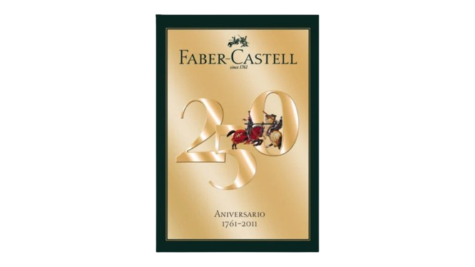

Em comemoração ao aniversário de 264 anos da marca, preparamos um Desafio onde você pode mostrar sua criatividade, aprender curiosidades sobre a nossa história e, claro, ganhar um kit de volta às aulas completíssimo!
Não fique de fora dessa celebração única. Participe e leve para casa o melhor da Faber-Castell!
Etapa 1: Criatividade
Quantas cores você acha que existem na maior caixa de lápis Faber-Castell?
Desconto total: 0%
Etapa 2: Conhecimento
Qual é o material sustentável usado na fabricação dos EcoLápis?
Desconto total: 25%
Etapa 3: Curiosidade
Desde que ano a Faber-Castell existe?
Desconto total: 50%
Etapa 4: Arte
Qual produto Faber-Castell você escolheria para criar uma obra de arte detalhada?
Desconto total: 75%
Etapa 5: Personalização
Qual dessas opções seria a melhor maneira de personalizar o seu estojo Faber-Castell?
Desconto total: 100%
Parabéns!
Incrível! Você acaba de conquistar um prêmio especial!

Estamos aqui para reconhecer sua dedicação e lhe presentear com um "Kit Completo de Volta as Aulas"!
Você agora faz parte da celebração dos 264 anos da Faber-Castell no Brasil. Clique no botão abaixo para escolher seu kit e resgatar um brinde exclusivo.